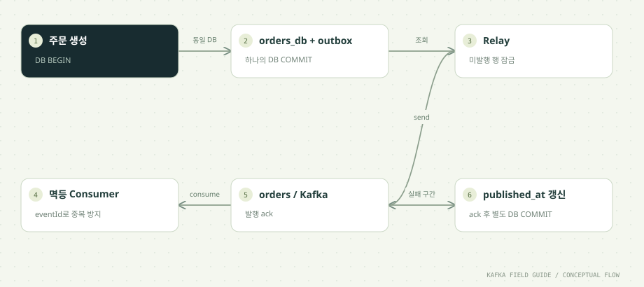

이 단원을 마치면
- DB/Kafka 이중 쓰기의 실패 구간을 찾는다
- 주문과 발행 의도를 원자적으로 저장한다
- Relay 재발행을 Consumer 멱등성과 연결한다
- Polling Relay와 CDC 기반 Outbox의 차이를 설명한다
01 / UNDERSTAND먼저, 원리를 이해합니다.
DB와 Kafka를 따로 쓰면 틈이 생깁니다
DB와 Kafka는 각자의 트랜잭션을 가진 별개의 시스템입니다. 두 곳에 순서대로 쓰는 코드는 어떤 순서를 택해도 중간에 끊기는 지점이 생깁니다.
- DB 저장 → Kafka 발행: DB 커밋 뒤 발행 전에 프로세스가 죽거나 Kafka가 응답하지 않으면 이벤트가 유실됩니다. 주문은 있는데 아무도 모르는 상태입니다.
- Kafka 발행 → DB 저장: 발행 뒤 DB 제약 위반이나 장애로 저장이 실패하면, 하류 서비스는 존재하지 않는 주문의 이벤트를 처리합니다(유령 이벤트).
- DB 트랜잭션 안에서 Kafka 발행:
BEGIN → INSERT → Kafka send → COMMIT처럼 묶어도 해결되지 않습니다. send가 성공한 뒤 COMMIT이 실패하면 역시 유령 이벤트가 남습니다.
'실패하면 다시 보내면 되지 않나'라고 생각하기 쉽지만, 프로세스가 강제 종료되면 재시도할 코드 자체가 실행되지 않습니다. 메모리에만 있던 '보내야 할 이벤트'는 프로세스와 함께 사라집니다. 문제의 본질은 보내야 한다는 사실이 영속적으로 기록되지 않았다는 데 있습니다.
업무 데이터와 발행 의도를 함께 저장합니다
Outbox 패턴은 '보내야 할 이벤트'를 업무 데이터와 같은 DB, 같은 트랜잭션에 저장합니다. 이 실습의 outbox 테이블은 다음과 같습니다.
CREATE TABLE IF NOT EXISTS outbox (
event_id varchar(180) PRIMARY KEY,
aggregate_id varchar(180) NOT NULL,
payload text NOT NULL,
created_at timestamptz NOT NULL DEFAULT now(),
published_at timestamptz
);OutboxLab.createOne은 한 Connection에서 autoCommit=false로 orders_db INSERT와 outbox INSERT를 실행한 뒤 한 번에 커밋합니다. DB가 보장하는 원자성 덕분에 둘 다 저장되거나 둘 다 저장되지 않습니다. 주문 API는 이 커밋이 끝나면 성공 응답을 돌려주면 되고, Kafka의 상태는 신경 쓰지 않습니다.
aggregate_id는 이벤트가 속한 업무 대상(여기서는 주문 ID)이며, Relay가 Kafka의 key로 씁니다. 같은 주문의 이벤트가 같은 파티션으로 가도록 하기 위해서입니다(02단원). published_at이 NULL인 행이 '아직 보내지 않은 이벤트'이고, 스키마에는 이 행만 빠르게 찾는 부분 인덱스(WHERE published_at IS NULL)도 있습니다.
Relay는 at least once로 동작합니다
Relay는 outbox에서 미발행 행을 하나씩 꺼내 Kafka로 보내는 별도 프로세스입니다. 이 실습의 Relay는 한 번의 루프에서 다음 순서를 지킵니다.
published_at IS NULL인 가장 오래된 행을FOR UPDATE SKIP LOCKED로 잠그며 조회합니다.- 행의
aggregate_id를 key,payload를 value로 Kafka에 보내고get()으로 ack를 기다립니다. - ack를 받은 뒤에만
published_at=now()로 갱신하고 DB를 커밋합니다.
순서가 중요합니다. 3을 2보다 먼저 하면, 표시만 하고 보내기 전에 장애가 났을 때 이벤트가 영영 유실됩니다. 반대로 지금 순서에서는 2와 3 사이에 장애가 나면 같은 이벤트가 다시 발행됩니다. Kafka에는 이미 기록되었지만 DB에는 미발행으로 남기 때문입니다.
유실보다는 중복이 낫다는 선택이며, 이것이 Relay가 at least once인 이유입니다. 그래서 outbox 행의 event_id를 이벤트 안에 그대로 담아 보내고, Consumer는 06단원처럼 eventId로 중복을 걸러냅니다. Outbox만으로는 정확히 한 번이 완성되지 않습니다. 'Outbox(유실 방지) + 멱등 Consumer(중복 제거)'가 한 쌍입니다.
SKIP LOCKED와 순서는 별개입니다
PostgreSQL의 FOR UPDATE SKIP LOCKED는 다른 트랜잭션이 이미 잠근 행을 기다리지 않고 건너뛰고 다음 행을 가져옵니다. Relay를 여러 개 띄워도 같은 행을 동시에 집어 두 번 보내는 충돌이 줄어듭니다.
하지만 이 기능은 순서를 지켜 주지 않습니다. 같은 주문의 이벤트 A(생성)와 B(취소)가 있을 때, Relay 1이 A를 잠그고 전송하는 사이 Relay 2는 A를 건너뛰고 B를 먼저 보낼 수 있습니다. 그러면 하류에는 '취소 → 생성' 순서로 도착합니다. 여러 Relay를 쓰면서 업무 대상별 순서가 중요하다면 별도 설계가 필요합니다(아래 '함께 알아둘 개념' 참고).
이 실습은 순서 문제를 피하려고 Relay 하나만 실행합니다. 그리고 이 Relay는 Kafka 전송이 끝날 때까지 행 잠금과 DB 트랜잭션을 유지하므로 동작은 명확하지만, Kafka가 느려지면 DB 트랜잭션도 길어집니다. 운영에서는 여러 행을 묶어 가져오고, 전송 시간과 잠금 시간을 함께 관찰합니다.
발행 대기와 정리 정책이 필요합니다
Outbox를 도입하면 '이벤트가 DB에서 Kafka로 넘어가는 구간'이 새로 생기고, 이 구간도 운영 대상이 됩니다. Relay가 멈추면 주문 API는 계속 성공하지만 이벤트는 outbox에 쌓이기만 합니다. 사용자 눈에는 '주문은 됐는데 알림이 안 온다'로 보입니다.
그래서 두 가지 지표를 봅니다.
- 미발행 건수:
published_at IS NULL인 행의 수입니다. 계속 늘어나면 Relay가 따라가지 못한다는 신호입니다. - 가장 오래된 미발행 이벤트의 나이:
now() - min(created_at)입니다. 건수보다 이 값이 업무 지연을 더 직접적으로 보여 줍니다. 12단원의 'Lag은 시간이 아니다'와 같은 이야기입니다.
발행이 끝난 행도 계속 쌓이므로 정리 정책을 정합니다. 일정 기간이 지난 발행 완료 행을 배치로 지우거나, 날짜별 파티션 테이블을 만들어 오래된 파티션을 통째로 떼어 냅니다. 보관 기간은 '발행 이력을 며칠까지 추적해야 하는가'로 정합니다.
시간순으로 따라가기: Relay가 ack 직후 죽었을 때
이 단원의 실습 명령 순서와 같습니다. 시각은 설명을 위한 예시입니다.
| 시점 | 일어나는 일 | DB 상태 | Kafka 상태 |
|---|---|---|---|
| 10:00:00.000 | 주문 API가 BEGIN → orders_db INSERT → outbox INSERT → COMMIT | 주문 1건, outbox 1건(published_at NULL) | 없음 |
| 10:00:00.300 | Relay가 미발행 행을 FOR UPDATE SKIP LOCKED로 잠급니다. | 행 잠금 | 없음 |
| 10:00:00.320 | Relay가 orders로 send하고 ack를 받습니다(RELAY_ACK day10-0). | 아직 미발행 표시 | day10-0 1건 |
| 10:00:00.321 | Relay가 강제 종료됩니다(exit 17). | DB 연결이 끊겨 트랜잭션 롤백, 잠금 해제 | day10-0 1건 |
| 10:00:05.000 | Relay를 다시 실행해 같은 행을 잠그고 다시 보냅니다. | 행 잠금 | day10-0 2건(같은 key, 같은 파티션) |
| 10:00:05.020 | published_at=now() 갱신 후 COMMIT | 발행 완료 | day10-0 2건 |
| 10:00:10.000 | dedup Consumer가 두 레코드를 차례로 읽습니다. | processed_events 1건, 합계 1회 증가 | 첫 번째 APPLIED, 두 번째 DUPLICATE_SKIPPED |
어느 시점에 장애가 나도 주문과 이벤트의 불일치는 생기지 않습니다. 남는 문제는 중복뿐이고, 중복은 Consumer가 처리합니다.
이중 쓰기 방식별 실패 구간
| 방식 | 장애가 나면 | 결과 | 판정 |
|---|---|---|---|
| DB 저장 후 Kafka 발행 | 커밋 뒤 발행 전에 종료 | 이벤트 유실 | 위험 |
| Kafka 발행 후 DB 저장 | 발행 뒤 DB 저장 실패 | 존재하지 않는 주문의 이벤트 | 위험 |
| DB 트랜잭션 안에서 Kafka 발행 | 발행 뒤 COMMIT 실패 | 존재하지 않는 주문의 이벤트 | 위험 |
| Transactional Outbox | Relay가 ack 뒤 표시 전에 종료 | 같은 eventId 재발행 | 안전 (Consumer 멱등성 필요) |
Outbox는 유실과 유령 이벤트를 없애는 대신 중복을 남깁니다. 중복은 eventId로 제거할 수 있지만, 유실은 나중에 알아채기도 어렵습니다.
Polling Relay와 CDC 기반 Outbox 비교
| 항목 | Polling Relay (이 실습) | CDC 기반 (예: Kafka Connect + Debezium) |
|---|---|---|
| outbox를 읽는 방법 | SQL로 미발행 행을 주기적으로 조회합니다. | DB의 변경 로그(PostgreSQL WAL 등)를 읽어 INSERT를 감지합니다. |
| 추가 구성 요소 | Relay 프로세스 하나 | Kafka Connect 클러스터와 CDC 소스 커넥터 |
| DB 부하 | 조회와 행 잠금, published_at 갱신이 반복됩니다. | 조회 부하는 적지만 복제 슬롯 같은 DB 측 설정과 관리가 필요합니다. |
| 전달 지연 | 폴링 주기만큼 늦어질 수 있습니다. | 커밋 직후 거의 바로 전달됩니다. |
| 순서 | 구현에 따라 다릅니다. 여러 Relay면 깨질 수 있습니다. | DB 커밋 순서대로 읽습니다. |
| 발행 완료 표시 | published_at 갱신이 필요합니다. | 필요 없습니다. 읽은 위치는 Connect가 offset으로 관리합니다. |
| 중복 가능성 | 있습니다 (ack 후 표시 전 장애). | 전제해야 합니다. 커넥터 재시작 등으로 다시 보낼 수 있습니다. |
| 알맞은 상황 | 이벤트 양이 적당하고 구성 요소를 늘리기 어려울 때 | 이벤트가 많고 지연이 중요하며 Connect를 운영할 수 있을 때 |
Kafka Connect는 부록 A2에서 다룹니다. 어느 방식이든 Consumer의 멱등 처리는 필요합니다.
한 걸음 더: 함께 알아둘 개념
기본 흐름을 이해했다면, 실무에서 곧바로 마주치는 관련 개념을 이어서 정리합니다.
CDC로 outbox를 읽는 방법
CDC(Change Data Capture)는 DB가 내부적으로 남기는 변경 로그를 읽어 '어떤 행이 추가·수정·삭제되었는지'를 이벤트로 내보내는 기술입니다. PostgreSQL이라면 WAL(Write-Ahead Log)을 논리적 복제 방식으로 읽습니다. Kafka 생태계에서는 Kafka Connect 위에서 동작하는 CDC 소스 커넥터(대표적으로 Debezium)를 많이 씁니다.
Outbox와 CDC를 함께 쓰면 Relay 코드가 사라집니다. 애플리케이션은 지금처럼 업무 데이터와 outbox를 한 트랜잭션에 INSERT만 하고, 커넥터가 outbox 테이블의 INSERT를 감지해 Kafka로 보냅니다. Debezium은 outbox 테이블의 컬럼을 Kafka 레코드의 key·value·토픽으로 바꿔 주는 전용 변환 기능도 제공합니다.
대가도 있습니다. Connect 클러스터를 운영해야 하고, DB 쪽에서는 커넥터가 읽어 가지 않으면 변경 로그가 계속 쌓이는 문제(PostgreSQL의 복제 슬롯 관리 등)를 지켜봐야 합니다. 커넥터가 재시작하면 마지막으로 기록한 위치 이후를 다시 보낼 수 있으므로, Consumer의 중복 제거는 여전히 필요합니다.
업무 대상별 순서를 지키는 방법
같은 주문의 이벤트를 발생 순서대로 전달해야 한다면 세 가지를 함께 설계합니다.
- Kafka key를 업무 대상 ID로: Relay가
aggregate_id를 key로 쓰므로 같은 주문의 이벤트는 같은 파티션에 들어가고, 파티션 안에서는 순서가 유지됩니다. 이 실습이 이미 이렇게 합니다. - Relay 쪽 직렬화: Relay를 하나만 두거나, 여러 개라면
aggregate_id의 해시로 담당 범위를 나눠 같은 주문은 항상 같은 Relay가 처리하게 합니다. 같은 주문의 이전 이벤트가 아직 미발행이면 다음 이벤트를 보내지 않는 방법도 있습니다. - 순번(sequence) 기록: outbox에 업무 대상별 순번을 함께 저장하고 이벤트에도 담습니다. Consumer는 '마지막으로 처리한 순번보다 작거나 같은 이벤트'를 무시하거나 보류할 수 있습니다. 전달 순서가 어긋나도 Consumer가 스스로 판단할 근거가 생깁니다.
Consumer 쪽의 짝: Inbox 패턴
Outbox가 '보내는 쪽에서 보낼 일을 DB에 먼저 적는' 패턴이라면, Inbox 패턴은 '받는 쪽에서 받은 이벤트를 DB에 먼저 적는' 패턴입니다. Consumer가 이벤트를 받으면 eventId를 inbox 테이블에 INSERT하고, 같은 DB 트랜잭션 안에서 업무 처리를 합니다. 이미 있는 eventId라면 INSERT가 실패하므로 중복을 건너뜁니다.
이름은 낯설어도 내용은 06단원에서 이미 구현했습니다. processed_events(handler, event_id) 테이블이 바로 inbox 역할을 합니다. 실습의 dedup 명령에서 handler가 'order-totals'로 고정되어 있으므로, 중복 판정은 Kafka Consumer Group이 아니라 업무 처리기 단위로 이루어집니다. 그룹 이름을 바꿔 다시 읽어도 이미 처리한 eventId는 건너뛰는 이유입니다.
왜 2단계 커밋으로 묶지 않을까요?
DB와 메시지 시스템을 함께 커밋하는 고전적인 방법은 XA 같은 분산 2단계 커밋(2PC)입니다. 하지만 Kafka는 외부 시스템과 XA 트랜잭션에 참여하지 않습니다. 09단원의 Kafka 트랜잭션은 Kafka 내부의 쓰기만 묶습니다. 2PC를 지원하는 시스템끼리라도 코디네이터 장애 시 잠금이 오래 남는 등 운영 부담이 커서, 최근의 이벤트 기반 설계에서는 잘 쓰지 않습니다.
다른 대안으로 'Kafka에 먼저 쓰고, 자기 자신도 그 이벤트를 구독해 DB에 반영하는' 방식(listen to yourself)이 있습니다. Kafka를 단일 기록 원천으로 삼는 셈인데, 방금 쓴 주문을 DB에서 바로 조회할 수 없는 지연이 생기고 모든 쓰기 흐름을 바꿔야 합니다. 대부분의 기존 서비스에는 Outbox가 더 적은 변경으로 같은 문제를 풉니다.
outbox를 관찰하고 정리하는 SQL
Relay의 건강 상태는 SQL 한 줄로 확인할 수 있습니다. 알람은 건수보다 나이를 기준으로 거는 편이 업무 영향과 잘 맞습니다.
SELECT count(*) AS pending, now() - min(created_at) AS oldest_age
FROM outbox WHERE published_at IS NULL;정리는 발행이 끝난 오래된 행을 작은 배치로 나눠 지웁니다. 한 번에 수백만 행을 지우면 긴 트랜잭션과 잠금이 생기기 때문입니다. 이벤트가 아주 많다면 created_at 기준 파티션 테이블로 만들어 오래된 파티션을 분리·삭제하는 방법이 더 가볍습니다.
DELETE FROM outbox
WHERE event_id IN (SELECT event_id FROM outbox
WHERE published_at < now() - interval '7 days' LIMIT 1000);02 / FOLLOW THE EVENT데이터의 이동을 따라갑니다.


원리를 이해하기 위한 단계 모델입니다. 네트워크 시간이나 장애 판정을 재현하지 않습니다.
같은 이벤트가 재발행되는 구간
① → ② → 장애 → ② 순서로 누르면 같은 eventId의 기록이 2건이 됩니다. 설명용 모델입니다.
03 / READ THE CODE현업 패턴을 코드로 읽습니다.
아래 코드는 함께 제공된 실행 소스에서 발췌했습니다. 전체 클래스와 설정은 소스 파일에서 확인할 수 있습니다.
try (var query = db.prepareStatement("""
SELECT event_id,aggregate_id,payload FROM outbox
WHERE published_at IS NULL ORDER BY created_at,event_id
LIMIT 1 FOR UPDATE SKIP LOCKED
"""); var rows = query.executeQuery()) {
if (!rows.next()) { db.rollback(); break; }
String eventId=rows.getString(1);
producer.send(new ProducerRecord<>("orders",rows.getString(2),rows.getString(3))).get();
System.out.println("RELAY_ACK " + eventId);
if (mode.equals("crash-after-send")) {
System.out.println("CRASH: Kafka ack received, outbox not marked. Restart will resend.");
System.out.flush(); Runtime.getRuntime().halt(17);
}
try (var mark = db.prepareStatement("UPDATE outbox SET published_at=now() WHERE event_id=?")) {
mark.setString(1,eventId); mark.executeUpdate();
}
}
db.commit();소스: 고급/src/main/java/study/kafka/OutboxLab.java · 46행부터
- Kafka send의 ack를
get()으로 확인한 뒤에만published_at을 갱신합니다. 반대 순서라면 표시만 하고 보내기 전에 장애가 났을 때 이벤트를 잃습니다. - 조회부터
published_at갱신까지 하나의 DB 트랜잭션입니다. 프로세스가 죽으면 커밋되지 않은 트랜잭션이 롤백되어 행 잠금과 미발행 상태가 그대로 돌아옵니다. - 트랜잭션 경계는 DB 안에만 있습니다. Kafka ack와 DB commit 사이의 중복 가능성을 없앤 것이 아니라, 유실 대신 중복을 고른 설계입니다.
ORDER BY created_at, event_id로 가장 오래된 행부터 보냅니다. Relay가 하나일 때만 이 순서가 그대로 Kafka에 반영됩니다.
먼저, 주문과 발행 의도를 함께 저장합니다
Relay 이전의 쓰기 경계입니다. 주문과 outbox INSERT를 같은 Connection의 DB 트랜잭션에 넣습니다. fail 모드는 두 INSERT 뒤에 오류를 내므로 롤백 여부를 검증할 수 있습니다.
try (var order = db.prepareStatement("INSERT INTO orders_db(order_id,amount) VALUES (?,?)");
var outbox = db.prepareStatement("INSERT INTO outbox(event_id,aggregate_id,payload) VALUES (?,?,?)")) {
order.setString(1,event.orderId()); order.setLong(2,event.amount());
order.executeUpdate();
outbox.setString(1,event.eventId()); outbox.setString(2,event.orderId()); outbox.setString(3,event.json());
outbox.executeUpdate();
}
if (fail) throw new IllegalStateException("INJECTED failure: roll back order AND outbox");
db.commit();04 / MAKE IT REAL이제, 직접 확인합니다.
PowerShell에서 저장소 루트로 이동한 뒤 실행하세요. 01단원의 up → build → init이 선행되어야 합니다. 종료된 환경은 up으로 다시 시작합니다. 이후 단원의 max=0은 입력이 끊긴 뒤 25초까지 읽습니다. 대응 실습 안내 파일 ↗
01. 발행 의도 저장
.\실습\study.ps1 run outbox-create 1 day10OUTBOX_CREATED day10-0이 출력됩니다. 같은 runId 재사용은 PK 충돌이므로 새 실험에는 새 runId를 쓰세요.
OUTBOX_CREATED day10-0이 한 줄이 나왔다면 DB 트랜잭션 하나에서 두 행이 함께 커밋된 것입니다. orders_db에는 주문 day10-order-0(금액 1000)이, outbox에는 eventId day10-0, aggregate_id가 day10-order-0이고 published_at이 NULL인 행이 생겼습니다.
Kafka에는 아직 아무것도 없습니다. 주문 API라면 여기서 성공 응답을 돌려줘도 됩니다. 보내야 한다는 사실이 DB에 남았기 때문입니다. 같은 runId로 다시 실행하면 orders_db의 기본 키(order_id) 충돌로 실패하므로 새 실험에는 새 runId를 쓰세요.
02. ack 직후 장애
.\실습\study.ps1 run outbox-relay crash-after-send 1RELAY_ACK 뒤 exit 17입니다. published_at은 비어 있습니다.
RELAY_ACK day10-0
CRASH: Kafka ack received, outbox not marked. Restart will resend.
Docker command failed (exit 17). See the output above.RELAY_ACK는 Kafka가 레코드를 기록하고 ack를 돌려줬다는 뜻입니다. 그 직후 Runtime.halt(17)로 프로세스가 강제 종료되었습니다. published_at 갱신도, DB 커밋도 실행되지 않았으므로 DB 연결이 끊기면서 트랜잭션이 롤백되고 행 잠금이 풀립니다. 결과적으로 Kafka에는 이벤트가 있고 DB에는 미발행으로 남은 상태가 됩니다.
exit 17과 PowerShell 오류는 의도된 결과입니다. Relay는 가장 오래된 미발행 행부터 보내므로, 이전 실험에서 남은 미발행 행이 있다면 day10-0이 아닌 다른 eventId가 출력될 수 있습니다.
03. 재발행
.\실습\study.ps1 run outbox-relay normal 10이전에 ack된 eventId가 다시 RELAY_ACK될 수 있습니다.
RELAY_ACK day10-0
RELAYED 1재시작한 Relay가 같은 행을 다시 찾아 한 번 더 보냈습니다. 이번에는 ack 뒤 published_at을 갱신하고 커밋까지 마쳤습니다. RELAYED는 이번 실행에서 보낸 건수이며, 더 보낼 행이 없으면 max(10)에 닿기 전에 끝납니다.
이제 orders 토픽에는 eventId가 day10-0인 레코드가 두 건 있습니다. key가 같은 day10-order-0이므로 두 레코드는 같은 파티션에 연속된 offset으로 들어갔습니다. Outbox가 유실은 막았지만 중복은 남긴다는 사실을 눈으로 확인한 셈입니다.
04. 중복 방지 확인
.\실습\study.ps1 run dedup outbox-dedup-day10 0 normal재발행된 같은 eventId 중 하나가 DUPLICATE_SKIPPED입니다.
ASSIGNED [orders-0, orders-1, orders-2]
DUPLICATE_SKIPPED event=day01-0 order=order-0
...
APPLIED event=day10-0 order=day10-order-0
DUPLICATE_SKIPPED event=day10-0 order=day10-order-0
...
REVOKED [orders-0, orders-1, orders-2]
HANDLED 143새 그룹이라 orders를 처음부터 읽으므로 이전 단원의 이벤트도 함께 처리합니다. 핵심은 day10-0이 연속으로 두 번 나오며 첫 번째는 APPLIED, 두 번째는 DUPLICATE_SKIPPED라는 점입니다.
이전 단원에서 이미 처리한 이벤트들도 DUPLICATE_SKIPPED로 나올 수 있습니다. processed_events의 중복 판정 기준이 Consumer Group이 아니라 handler='order-totals'이기 때문입니다. 그룹 이름을 바꿔도 같은 업무 처리기는 같은 eventId를 두 번 반영하지 않습니다. 줄 수와 HANDLED 숫자는 토픽에 쌓인 데이터에 따라 달라집니다.
05. 롤백 실험
.\실습\study.ps1 run outbox-create 1 day10-rollback rollbackINJECTED 오류와 비정상 종료가 예상 결과입니다. 주문과 outbox가 모두 저장되지 않아야 합니다.
Exception in thread "main" java.lang.IllegalStateException: INJECTED failure: roll back order AND outbox
at study.kafka.OutboxLab.createOne(OutboxLab.java:...)
...
Docker command failed (exit 1). See the output above.rollback 모드는 두 INSERT를 모두 실행한 뒤에 일부러 예외를 던집니다. catch 블록이 db.rollback()을 호출하므로, 이미 실행된 orders_db INSERT와 outbox INSERT가 함께 취소됩니다. OUTBOX_CREATED 줄이 출력되지 않은 것도 확인하세요.
이 실험이 보여 주는 것은 '주문만 저장되고 이벤트는 없는 상태'가 원리적으로 불가능하다는 점입니다. 주문 API가 실패 응답을 돌려줄 때 DB에도 Kafka에도 흔적이 남지 않습니다.
06. DB 확인
.\실습\study.ps1 sqloutbox 발행 시각과 집계 결과를 확인합니다.
order_id | event_count | total_amount
---------------+-------------+--------------
day10-order-0 | 1 | 1000
order-0 | 12 | ...
(n rows)
event_id | published_at
----------+-------------------------------
day10-0 | 2026-10-20 02:15:42.123456+00
(n rows)첫 번째 표는 order_totals입니다. Kafka에 같은 이벤트가 두 번 있었는데도 day10-order-0의 event_count는 1, 합계는 1000입니다. 두 번째 표는 outbox이며 day10-0에 발행 시각이 채워졌습니다. day10-rollback-0은 어디에도 없어야 합니다.
sql 명령은 order_totals와 outbox만 조회합니다. orders_db까지 확인하려면 docker compose -f .\실습\compose.yaml -p kafka-field-guide exec -T postgres psql -U study -d kafka_study -c "SELECT * FROM orders_db WHERE order_id LIKE 'day10%'"를 실행하세요. 숫자는 예시입니다.
한 걸음 더 실험하기
outbox-create만 실행하고 Relay를 실행하지 않은 채sql로 미발행 행이 남는지 확인하세요. 이 상태가 Relay 장애 때 운영에서 보게 될 모습입니다.- 하나의 Relay로 복구를 끝낸 뒤에만 다음 실험을 시작해, 이전 미발행 행과 새 행이 섞이지 않게 하세요.
- '함께 알아둘 개념'에 있는 미발행 건수·나이 SQL을 psql로 실행해,
crash-after-send직후와normal실행 뒤의 값을 비교해 보세요.
05 / APPLY IT로그 수집 파이프라인에 적용하면
같은 개념이 대용량 장비 로그 수집(수집 에이전트 → 수집 서버 → Kafka → 로그 저장소)에서는 어떻게 쓰이는지 정리합니다. 특정 회사나 장비가 아닌 일반적인 구성을 기준으로 합니다.
원본 로그에는 Outbox가 아니라 같은 질문이 필요합니다
장비 로그는 DB 트랜잭션에서 태어나는 데이터가 아니므로, 원본 로그 수집 경로에 Outbox 테이블을 둘 이유는 거의 없습니다. 하지만 이 단원의 핵심 질문, 즉 '보내야 한다는 사실을 언제 영속적으로 남기는가'는 수집 경로에도 그대로 적용됩니다.
- 수집 서버의 HTTP 응답 시점: 수집 서버가 요청을 받자마자 200을 돌려주고 Kafka 전송은 나중에 한다면, 그 사이에 서버가 죽으면 에이전트는 성공한 줄 알고 로그를 버립니다(유실). Kafka ack를 받은 뒤 200을 돌려주면 유실은 막지만, 응답이 타임아웃 난 경우 에이전트가 다시 보내 중복이 생깁니다(at least once). 대부분의 로그 시스템은 후자를 택하고 중복을 정리합니다.
- 에이전트 쪽 버퍼: 수집 서버나 Kafka가 멈춘 동안의 로그를 지키려면 에이전트가 보내지 못한 로그를 디스크에 쌓아 두고 재시도해야 합니다. Fluent Bit 같은 에이전트의 파일 시스템 버퍼가 이 역할을 하며, 개념적으로는 '에이전트 안의 outbox'입니다.
- 중복 정리용 ID: 재시도로 생긴 중복을 저장소에서 걸러내려면 로그마다 고유 ID(에이전트가 붙인 ID, 또는 장비 ID·장비 시각·순번 조합)가 필요합니다. 이 실습의 eventId와 같은 역할입니다.
반면 수집 서버가 자기 DB에 쓰면서 이벤트도 내야 하는 경우에는 Outbox가 정확히 맞습니다. 예를 들어 새 장비가 처음 접속해 장비 목록 DB에 등록되고, 동시에 '장비 등록됨' 이벤트를 다른 서비스에 알려야 한다면 이 단원의 패턴을 그대로 쓰면 됩니다.
06 / CHECK YOUR UNDERSTANDING설명할 수 있으면, 내 지식입니다.
자주 묻는 질문
Kafka 트랜잭션으로 DB와 Kafka를 함께 묶으면 Outbox가 필요 없지 않나요?
Kafka 트랜잭션은 Kafka 안의 쓰기와 Consumer Group offset만 묶습니다. Kafka는 외부 DB와 XA 같은 분산 트랜잭션에 참여하지 않으므로 DB 커밋과 Kafka 커밋을 하나로 만들 수 없습니다. 그래서 DB가 이미 가진 트랜잭션 안에 '보낼 이벤트'를 넣는 Outbox가 쓰입니다.
published_at을 먼저 표시하고 보내면 중복이 사라지지 않나요?
중복은 사라지지만 대신 유실이 생깁니다. 표시하고 커밋한 직후 전송 전에 장애가 나면, 그 이벤트는 '발행 완료'로 기록된 채 Kafka에는 영영 도착하지 않습니다. 유실은 나중에 알아채기도 어렵습니다. 중복은 eventId로 제거할 수 있으므로 ack 후 표시하는 쪽이 일반적인 선택입니다.
Relay를 여러 개 띄워 처리량을 늘려도 되나요?
FOR UPDATE SKIP LOCKED 덕분에 여러 Relay가 같은 행을 동시에 집는 일은 줄어듭니다. 다만 같은 업무 대상의 이벤트가 서로 다른 Relay에 나뉘면 전달 순서가 뒤바뀔 수 있습니다. 순서가 중요하면 aggregate_id 해시로 Relay의 담당 범위를 나누거나, 이벤트에 순번을 넣어 Consumer가 판단하게 합니다. 처리량이 더 필요하면 CDC 방식도 검토합니다.
CDC를 쓰면 중복 발행이 완전히 없어지나요?
그렇게 가정하지 않는 편이 안전합니다. 커넥터가 재시작하면 마지막으로 기록한 위치 이후의 변경을 다시 보낼 수 있습니다. Kafka Connect에는 소스 커넥터용 exactly-once 설정이 있지만, 분산 모드에서 켜야 하고 커넥터가 이를 지원해야 합니다. 어느 경우든 Consumer의 eventId 중복 제거는 유지하세요.
outbox 테이블은 언제 비우나요?
발행이 끝난 행은 추적에 필요한 기간이 지나면 지웁니다. 장애 조사 때 '이 이벤트가 언제 발행되었는가'를 확인할 수 있도록 며칠 정도 남겨 두는 경우가 많습니다. 삭제는 작은 배치로 나누고, 양이 매우 많다면 날짜별 파티션 테이블로 만들어 오래된 파티션을 통째로 떼어 내는 편이 DB에 부담이 적습니다.
Kafka ack 직후, published_at 저장 전에 Relay가 종료되면?
원리를 읽고 실습 결과를 확인했나요?
학습 기록은 이 브라우저에만 저장됩니다.